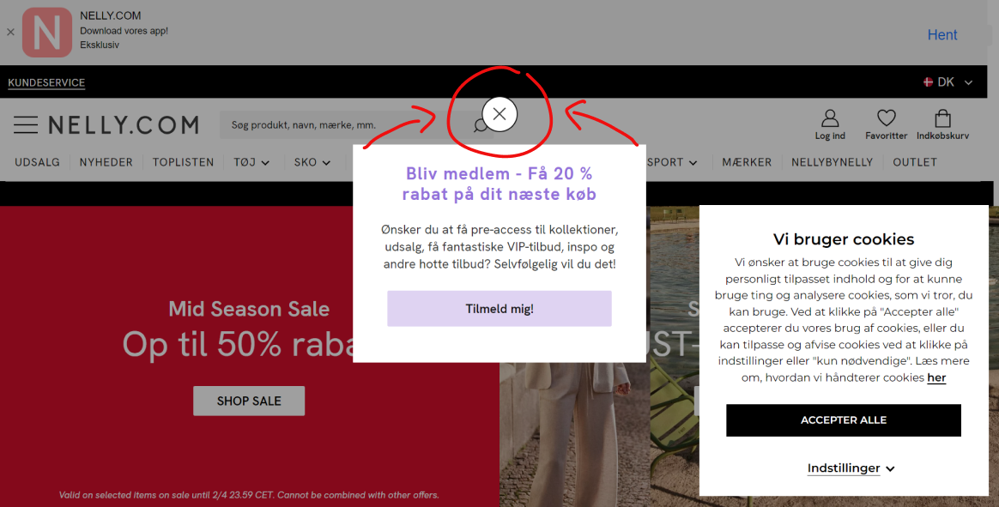
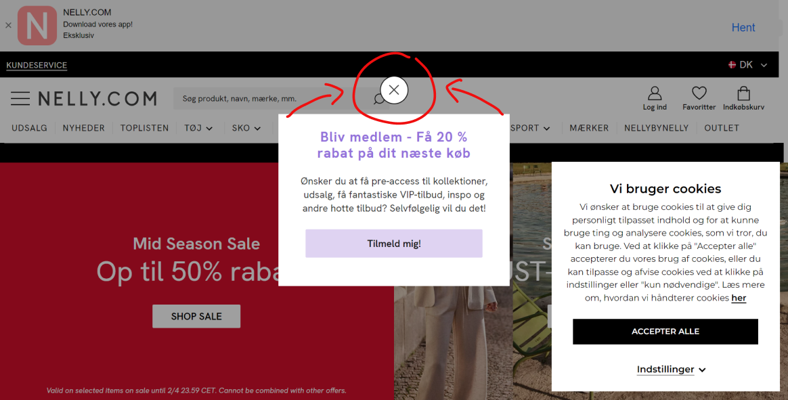
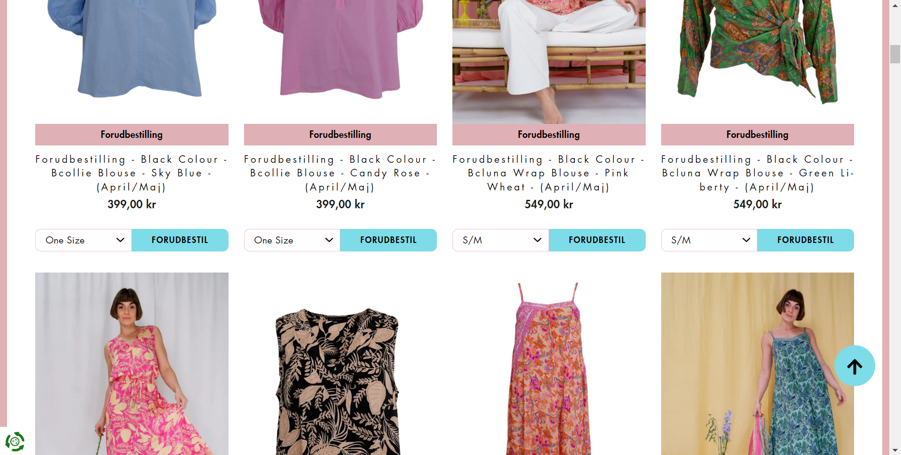
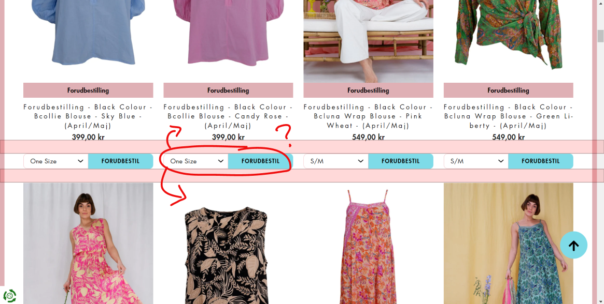

Nelly.com
Ifølge "Jakob's law of the internet user experience" burde ting såsom knapper, være plaseret det samme sted som alle andre hjemmesider gør, hvilket ikke er i midten af skærmen.
Der er tolv grundlæggende principper for design: contrast, balance, emphasis, proportion, hierarchy, repetition, rhythm, pattern, white space, movement, variety, og unity. Disse visuelle og grafiske designprincipper arbejder sammen for at skabe tiltalende og funktionelle design, der giver mening for brugerne.
Ifølge "Jakob's law of the internet user experience" burde ting såsom knapper, være plaseret det samme sted som alle andre hjemmesider gør, hvilket ikke er i midten af skærmen.
Ifølge CRAP principperne giver det ingen mening at teksterne med "forside", "tøj til kvinder" og antal af produkter står på den måde det gør. Det falder ud af Alignment med hinanden.
Desuden "kundeservice" knappen, ligger ikke ud til kanten med sammen afstand som slutningen af den rastererne tekst gør.
Der er lige meget plads mellem produktet for oven og produktet for neden, i forhold til knappens placering. I forhold til Proximity betyder dette at knappen kan have en realation til hvilken som helst af de to.
 